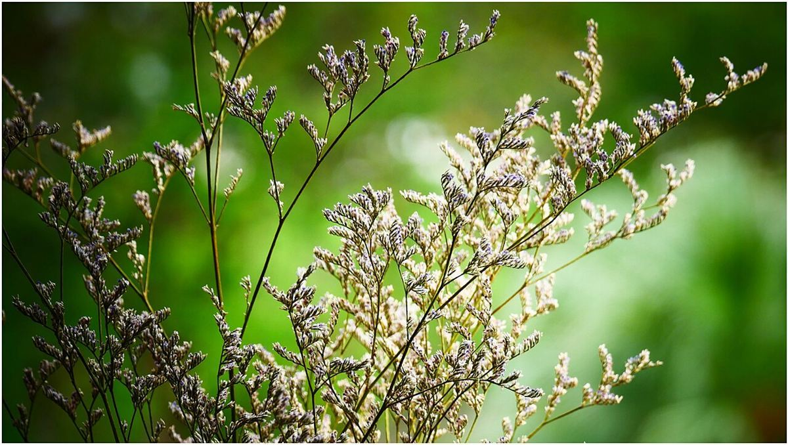

口コミ
以下は実際のお客様の声ではなく、制作側が作成したイメージ例です。実際のお客様からいただいた声ではありません。
「こんなふうに感じていただけたらいいな」という想像を、付箋に書いてみました。
イメージ例
群馬県高崎市の柴崎町で、のんびり過ごせる場所だったらいいな、と思います。散歩のついでに、ふらっと立ち寄れたらうれしいです。
イメージ例
電話やInstagramで問い合わせられるので、はじめてでも声をかけやすそうだと思います。まずは聞いてみたいな、と思います。
イメージ例
お店の名前の響きが、やわらかくて素敵だなと思います。静かで落ち着いた雰囲気だったらいいな、と思います。

気になることは、お店に直接おたずねください。
電話する 090-6494-2145